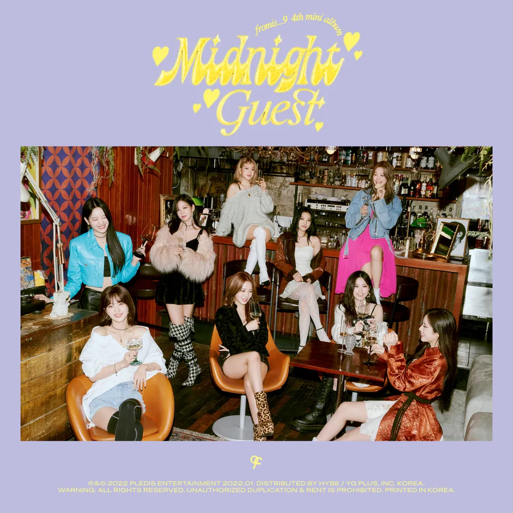
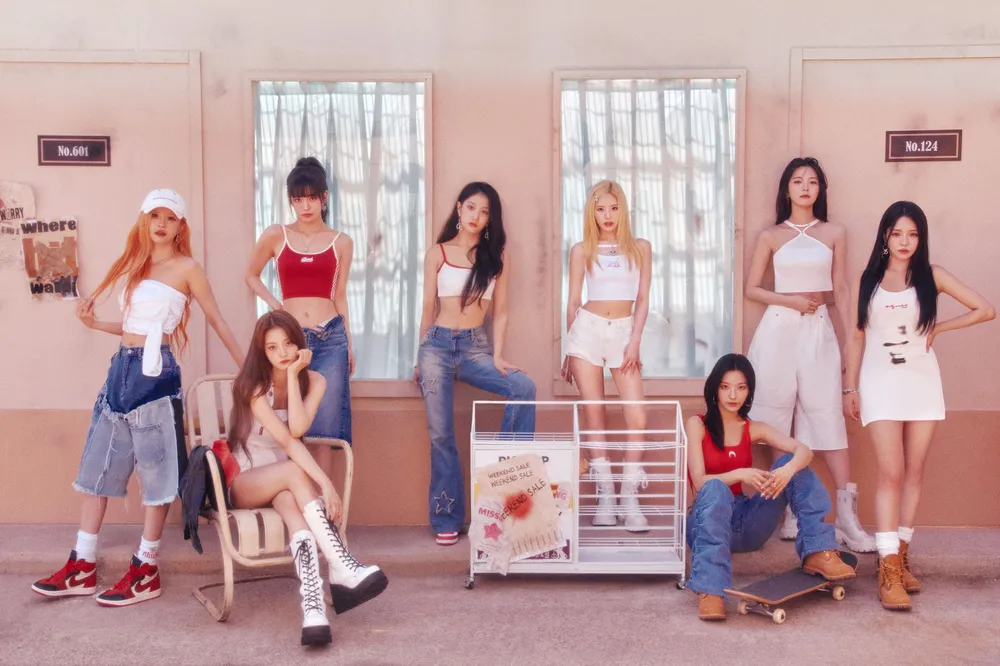

안녕하세요 라보엠입니다.
지난달부터 건강을 위해서 헬스장을 다니기 시작했습니다. 헬스장에서는 운동을 촉진 시키기 위해서인지 빠른 비트의 아이돌 노래를 많이 틀어주는 편입니다. 운동을 하다가 우연히 오늘 소개해드릴 이 노래 프로미스나인의 DM 을 듣게 되었습니다. 오마이걸의 노래인가 했는데, 오마이걸 플레이리스트에서 들어본 기억이 없어서, 바로 음악앱에서 노래 찾기로 금방 찾아 기록해놨습니다. 사실 프로미스나인은 커뮤니티에서 막내 백지헌의 짤이 많이 보여 눈여겨보고 있었는데, 처음 듣고 마음에 든 노래가 프로미스나인의 곡이라 조금 신기했습니다.

프로미스나인은 엠넷 아이돌 오디션 프로그램 아이돌학교(is) 출신 9명의 멤버로 구성되어(한명은 탈퇴) from is_9 으로 그룹의 이름이 지어졌습니다. 아이돌학교(is) 출신 (from) 이라는 의미도 있고, 팬과의 약속 프로미스(promis) 이라는 의미도 담고 있습니다. 프로미스나인의 노래 DM은 2022년 1월 17일 미니 4집 'Midnight Guest'의 타이틀곡으로 프로미스나인의 매력을 한층 더 업그레이드시킨 곡으로 평가받고 있습니다.
프로미스나인 'DM' Official MV
Release Note
[Midnight Guest]는 새벽 탈출을 감행한 프로미스나인이 무료한 밤을 보내고 있는 이들을 깜짝 방문해 설렘을 선사하는 앨범이다. 일탈의 순간과 도시의 밤, 그리고 예상치 못한 의외의 상황들을 다양하게 담아냈으며 과감한 시도에서 비롯된, 짜릿하고 두근대는 감정을 생생하게 표현했다.
타이틀곡 ‘DM’은 새벽 탈출에 성공한 프로미스나인이 좋아하는 이에게 다가가 과감하게 사랑을 고백하는 순간의 설렘을 담은 곡으로, 반짝이는 도시의 밤과 본격적으로 사랑이 시작될 것만 같은 두근거리는 순간을 함께 경험할 수 있는 곡이다. 아련한 느낌의 코드 진행과 펑키한 베이스 라인이 돋보이며 시원하게 터지는 후렴 파트가 인상적인 팝 장르의 곡이다.
사랑스러운 새벽 감성을 담은 'DM'
DM은 아련한 코드 진행과 펑키한 베이스라인이 돋보이는 팝 장르의 곡입니다. 프로미스나인 특유의 사랑스러운 감성을 느낄 수 있으면서도, 시원하게 터지는 후렴구가 인상적입니다. 노래의 내용은 새벽에 좋아하는 사람에게 다가가 과감하게 사랑을 고백하는 설렘을 담고 있습니다. 도시의 밤과 사랑이 시작되는 두근거림이 노래에 잘 담겨있습니다.
이번 앨범에서 프로미스나인은 조금 더 성숙하고 자신감 넘치는 모습을 보여줍니다. 'DM'을 통해 프로미스나인의 새로운 시대를 자신 있게 열어가고 있습니다. 특히 강렬한 퍼포먼스와 섬세한 표현력으로 멤버들의 매력을 극대화했다는 평가를 받고 있습니다.
프로미스 나인 DM 노래 가사
1.
Hey, you 지금 뭐 해
잠깐 밖으로 나올래
네가 보고 싶다고
거울 속의 난 so perfect
새로 산 신발도 check it, okay
잠든 도시를 깨워 late night, late night
더 더 더 두근거려
거리마다 빛나는 spotlight, spotlight
네게 가까워질 때
Ah, woo, woo, woo
내 입가에 미소가 번져
네 눈 속에 my eyes
떨려와 yeah
달콤하게 속삭일래
간직했던 내 맘을
Yeah, it's you
Doesn't matter
특별한 me and you
가까이 갈래 I want to
눈을 못 피하게
말도 못 돌리게
너만 좋다면
Doesn't matter
망설이지 말고
네 마음을 더 보여줘
네 손을 잡을래
너를 꼭 안을래
좋아해 널 내 맘은 I want you
2.
기다리다 놓쳐 날
너도 알잖아 난 special (woo)
원하는 건 딱 하나
모두 알잖아
다 티가 나는 걸
장난이 아니야 난
욕심이 생겼어 난
이대로 널 보낼 순 없어
Ah, woo, woo, woo
네 미소에 내 맘이 떨려
내 두 볼에 red light
번져와 yeah
솔직하게 말해볼래
숨겨왔던 내 맘은
Yeah, it's you
Doesn't matter
특별한 me and you
가까이 갈래 I want to
눈을 못 피하게
말도 못 돌리게
너만 좋다면
Doesn't matter
망설이지 말고
네 마음을 더 보여줘
네 손을 잡을래
너를 꼭 안을래 (좋아해 널 내 맘은 I want you)
So just listen 떨리는 내 손을 잡아줘
넌 so special 매일 밤 기다린 지금 이 순간
You're the one that I needed
나와 같다고 말해줘
이 밤이 끝나기 전에
Doesn't matter
시작해 me and you
느낌이 좋아 I got you
어떡해 너와 나
이렇게 가까이
네 맘이 보여
Doesn't matter
주저하지 말고 네 두 팔로 날 안아줘
어쩌면 너와 나
마주한 이 순간
좋아해 난 너만을 I want you

DM은 프로미스나인의 음악적 성장을 잘 보여주는 곡입니다. 중독성 있는 멜로디와 세련된 프로덕션으로 리스너들의 귀를 사로잡고 있습니다. 특히 후렴구의 훅이 인상적이며, 전체적으로 밝고 경쾌한 에너지가 넘치는 곡입니다.
프로미스나인은 이번 'DM'을 통해 한 단계 더 발전한 모습을 보여주었습니다. 앞으로 그들의 행보가 더욱 기대됩니다.